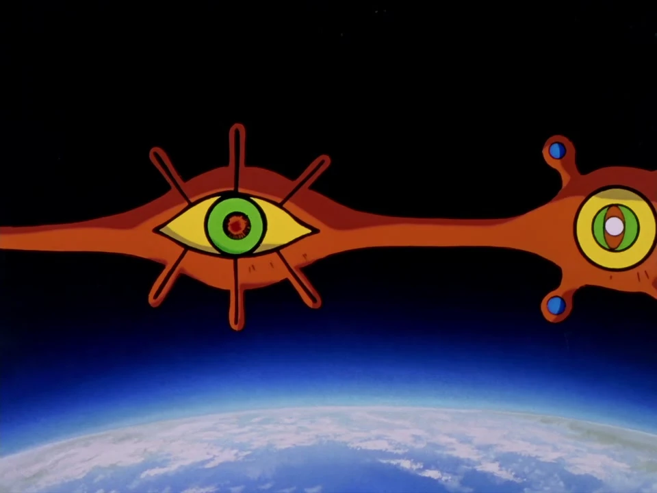

Sahaquiel
Il s'agit du premier Ange à apparaître dans l'orbite terrestre. Son objectif est d'utiliser sa masse pour s'écraser sur Tokyo-3 et atteindre le GeoFront. Il est vaincu par un plan risqué utilisant les trois Evas pour le stopper.
Il s'agit du premier Ange à apparaître dans l'orbite terrestre. Son objectif est d'utiliser sa masse pour s'écraser sur Tokyo-3 et atteindre le GeoFront. Il est vaincu par un plan risqué utilisant les trois Evas pour le stopper.